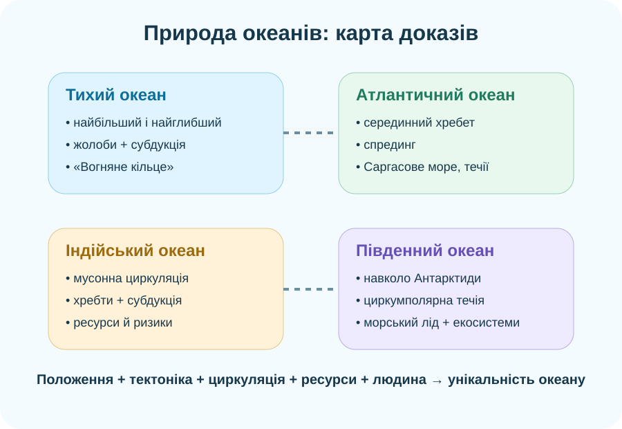

1. Ідентифікація
Робота заблокована до заповнення всіх полів.
2. Карта доказів

Схема — орієнтир. Просторові відповіді перевіряйте на реальній карті.
Підсумок розділу «Природа океанів». Тут перевіряємо не пам’ять на назви, а вміння читати карту, порівнювати океани, пояснювати течії, тектоніку, ресурси та екологічні проблеми доказами.
Робота заблокована до заповнення всіх полів.

Схема — орієнтир. Просторові відповіді перевіряйте на реальній карті.